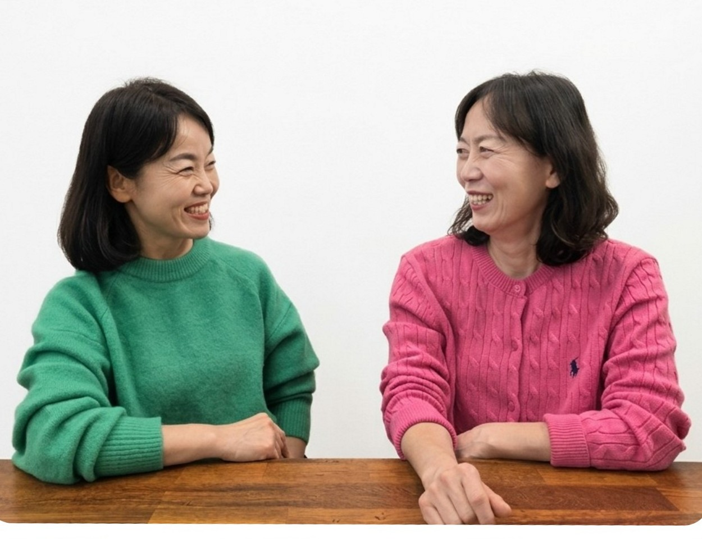

01
교실을 지켰습니다
교권침해의 현실을 드러내고 해결을 요구했습니다.
학교 안 갑질 의혹 조사, 피해 교원 보호와 괴롭힘 예방 조례 요구
조합원이 모이고, 현장이 움직이는 대전지부
선생님들의 목소리에 귀 기울이고,
현장의 고민을 함께 풀어가겠습니다.

교권침해의 현실을 드러내고 해결을 요구했습니다.
학교 안 갑질 의혹 조사, 피해 교원 보호와 괴롭힘 예방 조례 요구
학급운영비·시간외수당·보결수업수당 인상
육아시간 확보, 출산휴가 연장, 출산 관련 성과급 미지급 시정
일직성 근무, 일제고사, 주간계획·학습지도안 결재
접대문화, 군대식 수련회·애국조회, 어린이신문 강제구독 등
대전교육청과 단체교섭 재개 및 단체협약 체결
교권침해·악성 민원 신속 지원, 업무경감·수업자율권·휴가보장
더 나은 세상을 꿈꾸는 참교육 실천
사회적 의제 조합원 모임 지원, 교육 공공성·정책토론 활성화
작은 분회 방문과 분회 활동 지원 강화
신규·저경력 교사 참여 확대, 조합원 소통 및 균형 있는 지원
교사가 가르치는 일에 집중하는 학교,
교육의 미래를 고민하고 실천하는 전교조,
조합원이 모이고 현장이 움직이는 대전지부를 만들겠습니다.